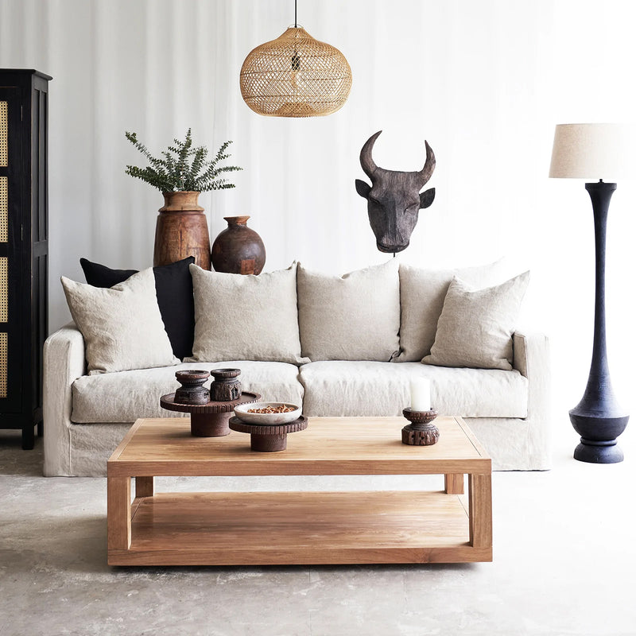
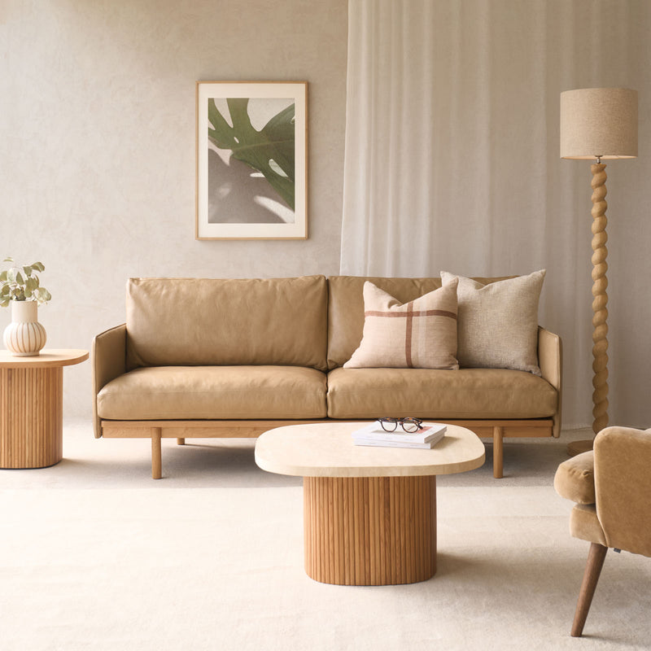
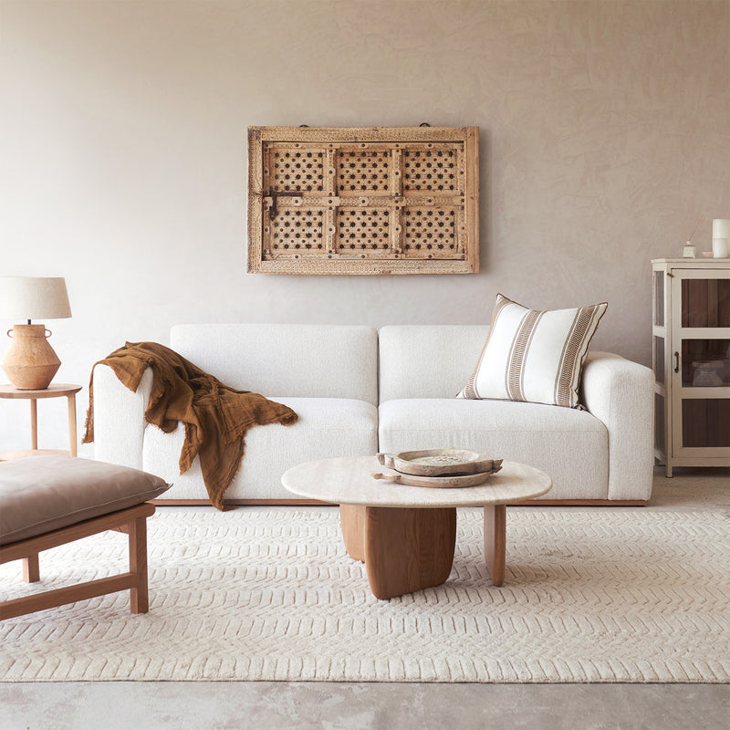

03
Splurge · Living Room
Sofa
小红书 · Lemon8 SG · Community Insights
- Skirted, deep-seat fabric sofas are the wabi-sabi defining form — generously padded, feather-wrapped seat cushions, slip-covered in raw or washed linen (flax, oat, stone). The Tolv "Sloopy" sofa appears in nearly every Singapore wabi-sabi home reveal.
- Linen ages into wabi-sabi — the philosophy values fabric that softens, slubs, and creases with use. Crisp performance fabrics actively work against the aesthetic. Accept the wrinkles.
- Aniline leather is acceptable — wabi-sabi honours patina. Full-grain aniline leather (Tolv "Pensive") develops a character map of where you sit, where light hits, where hands rest. Pigmented or "easy-care" leather doesn't age and is rejected by the style.
- Composition over modularity — XHS wabi-sabi living rooms favour a single substantial fabric sofa + one vintage wooden stool or low rattan chair, not a modular sectional. The empty space around the sofa is the design.
- Castlery Hamilton is borderline-acceptable as a budget alternative — the stainless steel legs read too clean for pure wabi-sabi. If chosen, swap to walnut tapered legs (Castlery offers this option on some collections, or use third-party leg replacements).
XHS:
侘寂风 沙发 推荐 ↗
亚麻 沙发 新加坡 ↗
原木风 客厅 ↗
· Lemon8:
Japandi / wabi-sabi design trend SG ↗
· Article: Originals Wabi-Sabi Collection guide ↗
Room dimension note: The floor plan labels "2.6m" and "2.0m" in the living area — likely partial references, not full room dimensions. Measure your actual space before purchasing. All options below are sized conservatively.
PRD §5.2 reconciliation: The user PRD now caps sofa max width at ≤180cm and sofa budget at SGD 3,000. All three Originals picks below exceed both constraints — they are kept on this page as the aspirational wabi-sabi sofa ideal (the form factor and material story the style asks for), but a fourth PRD-compliant option from the user's shortlist sheet is now listed underneath. If you are buying to PRD, choose Option 4. If the wall measurement is wider than 2.6m and you're willing to break the sofa budget for the wabi-sabi splurge, Options 1–3 are still on the table.

Originals · Sloopy Fabric Sofa 2.5-Seater (Flax linen, by Tolv)
Top PickFeather-WrappedPure Flax Linen
Originals Sloopy Fabric Sofa 2.5-Seater — Flax
Originals Furniture Singapore (Tolv) · Linen "Flax" cover · Feather-wrapped cushions · Skirted base
2.5-Seater
$5,680
Dimensions
W203 × D97 × H93cm (2.5-seater)
Seat depth / height
Seat depth 90cm · Seat height 44cm — exceptionally deep, lounge-style
Fabric
Linen, "Flax" colour — natural, breathable, develops character with age
Cushions
Feather-wrapped seat + back · 6 scatter cushions included
Frame
Kiln-dried engineered + solid wood frame · Casual skirted design
Covers
Fully removable, machine washable
Origin
Designed by Sketch · Made in Vietnam by Tolv
Lead time
In stock for 3-seater · 12–16 weeks for 2.5-seater
Buy
Why this is THE wabi-sabi sofa for Parc Esta
The Sloopy at 203cm fits beautifully into Parc Esta's compact living room with ~30cm clearance each side. Pure flax linen (not performance/treated) is essential to wabi-sabi — it slubs, creases, and softens into a unique surface over years. Feather-wrapped cushions sink and need fluffing — that imperfection is the philosophy in physical form. The skirted base hides the legs entirely, creating a grounded, settled silhouette. This is the most-photographed wabi-sabi sofa form on Singapore XHS.
Linen care reality check
Linen wrinkles. Linen shows where you sit. That's the point. If you'd rather your sofa look pristine every day, this style is wrong for you — choose Castlery Hamilton (Japandi page) instead.
Complete the living room (~$6,200 total)
- Vintage wooden stool or low rattan side chair — ~$180–280 (Haji Lane vintage shops / Carousell)
- Hand-thrown ceramic floor vase with a single dried branch — ~$80–150
- Coarse jute or undyed wool rug 200×300cm — IKEA SINDAL ~$99 or Originals undyed wool ~$880

Originals · Pensive Leather Sofa 2.5-Seater (Arena aniline leather, by Tolv)
Option 2Full-Grain Aniline LeatherSolid Oak Frame
Originals Pensive Leather Sofa 2.5-Seater — Arena
Originals Furniture Singapore (Tolv) · Full-grain aniline leather · Solid American oak frame
2.5-Seater
$5,080
Dimensions
W200 × D84 × H80cm (2.5-seater)
Frame
Handcrafted from solid American oak — visible structural wood, no upholstery hides it
Leather
Full-grain, full-aniline leather · Sourced South America · Finished in Italian tanneries
Colour
"Arena" — warm sand-brown that darkens and develops patina with sunlight + use
3.5-seater
W240 × D84 × H80cm — $5,880 if room allows
Buy
When to choose leather over linen
Aniline leather is the only leather grade that develops true patina — it absorbs oils, lightens at high-touch points, darkens elsewhere. Over 5–10 years, the sofa acquires a topographical map of your life. That is wabi-sabi made literal. The Pensive's exposed solid oak frame is the other half of the story — wood and leather aging at different rates, both honoured. At $5,080 it's $600 less than the Sloopy and at 200cm fits Parc Esta's room slightly better.
Leather + Singapore humidity
Aniline leather needs occasional conditioning (Lexol or Leather Honey) — 2× per year is enough. It is not "easy care" leather. If you'd prefer a sofa that requires zero ritual, go with the Sloopy linen instead.

Originals · Komo Modular 3-Seater (NS)
Option 3Value Wabi-SabiModular
Originals Komo Modular Sofa 3-Seater — Alabaster
Originals Furniture Singapore (NS) · Performance fabric Alabaster · Solid oak base
3-Seater
$3,400
Dimensions
W242 × D100 × H77cm (3-seater)
Frame
Handcrafted solid oak timber base
Cushions
Multilayered high-density memory foam · Feather foam lumbar inserts
Fabric
"Alabaster" performance fabric (also available in "Asgard")
Style
Modular contemporary — adaptable, more linear than Sloopy
Pre-order
Made to order · 16–20 weeks delivery
Buy
When to choose this
If $5,000+ is over budget for a sofa but you still want the Originals quality and solid oak base. The Komo is $1,680–$2,280 cheaper than the leather/linen splurges while keeping the wood frame visible. Note on size: at 242cm the 3-seater is borderline-too-large for a 2.6m living room — only 9cm clearance each side. Confirm room width is ≥2.8m before ordering, otherwise step down to a 2-seater equivalent or choose the Sloopy 2.5.
Wabi-Sabi purity caveat
Performance fabric is the trade-off for the price. It won't soften and slub the way pure linen does — but it will outlast the Sloopy in heavy daily use. A compromise position rather than a doctrinaire pick.

Taobao · Nordic Down-filled Wabi-Sabi Linen Sofa (CZ001)
PRD-CompliantWithin ≤180cmFrom Shortlist Sheet
Nordic Down-filled Wabi-Sabi Linen Sofa (Taobao CZ001)
Wabi-sabi minimalist aesthetic · Down-filled for extra comfort · Taobao 淘宝
Price
TBC
Why this slot
Added to satisfy PRD §5.2 — the only wabi-sabi-aesthetic sofa in the user shortlist sheet that fits the ≤180cm × $3,000 envelope
Aesthetic
Literally named "wabi-sabi" by the seller — minimalist, down-filled linen
Source
User shortlist tracker (PRD §9.2)
Buy
When to choose this over Options 1–3
Choose this if you're holding the line on the PRD §5.2 constraints — ≤180cm wall fit and ≤$3,000 sofa budget. The Originals splurge options (Sloopy / Pensive / Komo) above all overshoot both. This Taobao pick keeps the wabi-sabi character (down-filled linen, minimalist form) without breaking the brief. Confirm dimensions on the listing before ordering.
Castlery fallback
If Taobao logistics feel risky, the Castlery Hamilton 2-Seater in Performance Infinity Bouclé Cream ($1,319, W180cm — also from sheet) is the cleanest mainstream-retail alternative. Bouclé is the closest wabi-sabi-compatible texture in the Castlery line.